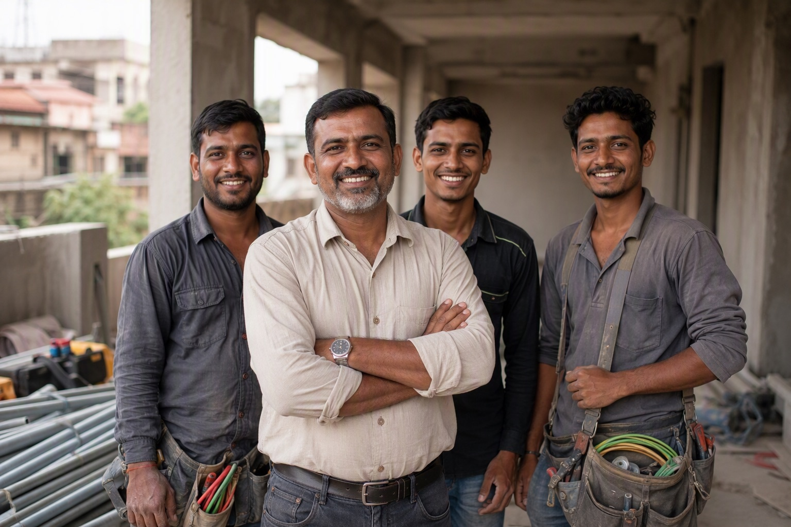

Bulk Finolex Wire Orders for Builders in Karnataka: A Practical Guide

For a bulk Finolex order in Karnataka, send an itemised bill of quantities with the phase each size is needed in, get a line-by-line quotation with freight shown separately, take delivery in phases against your programme, and make QR verification of every carton a named person's job before payment is released.
Why projects attract counterfeit wire
Counterfeit material is not spread evenly across the market. It concentrates where three conditions occur together: large quantities, nobody personally attached to the outcome, and material that disappears into a wall within days of arriving. A construction project is all three at once.
A family buying twenty coils will open a box out of curiosity. A site store taking four hundred cartons across six months will not, unless checking is written into somebody's job description. That gap is the entire opportunity, and closing it costs about thirty-five minutes per hundred cartons.
Stage 1 — The quotation
Send sizes, grades, quantities and the phase each is needed in. A photograph of the estimate works as well as a spreadsheet. What you should get back, within 60 minutes:
- Line-by-line pricing — brand, range, size, coil length, quantity, rate. Not a lump sum.
- Freight as a separate line for sites outside Bengaluru, so the landed cost is visible rather than buried in the rate.
- A dispatch schedule tied to your programme.
- Confirmation of what is physically in stock versus what would have to be arranged.
That last point decides more than people realise. A distributor holding stock can commit to a schedule; a seller indenting against your order is buying from a source neither of you can see.
Stage 2 — Phasing the deliveries
Taking the whole order in one delivery looks efficient and rarely is. Material sits on site for months absorbing damage, damp and shrinkage, and a large stack of copper is the most attractive thing on any site. Phased dispatch against the construction programme means each floor's material arrives when that floor needs it.
| Phase | Typically needed |
|---|---|
| Conduiting | Conduit, accessories, junction boxes — no wire yet |
| Wire pulling | The bulk of 1.0, 1.5 and 2.5 sq mm coils |
| Heavy circuits | 4.0 and 6.0 sq mm for AC, geyser and sub-mains |
| Termination and fit-out | Switches, sockets, DB components, remaining short runs |
Stage 3 — The receiving routine
This is the part that actually protects the project. Write it down, assign it to a named person, and do not treat it as optional:
- At the gate. Count cartons against the challan. Check seals before anything is unloaded into the store. A broken or re-taped seal is stopped there, not investigated later.
- Outer code on every carton. One person, one phone, scanning as cartons come off the vehicle. Confirm the reported size, grade and batch match the label.
- Inner code at issue. Cartons get opened when the store issues wire anyway. Scan the inner code at that moment and the check costs no extra handling.
- Log everything. Carton, batch, scan result, date, initials. If a dispute ever arises, this log is the difference between a claim and an argument.
| Code | Where it is | What it proves |
|---|---|---|
| Outer QR | Printed on the carton label with the size, grade, coil length and batch | That the carton was produced by Finolex and is registered with them |
| Inner QR | Inside the box, reachable only after the carton is opened | That the contents are what Finolex packed — the check a repacker cannot pass |
Both are needed. A genuine carton can be emptied and refilled with duplicate wire, and in that case the outer code still verifies perfectly while only the inner code fails. Stopping at the outer code is exactly what a repacker is relying on.
The time objection does not survive contact with the numbers: twenty seconds a scan means a hundred-carton delivery is about thirty-five minutes of one person's day. Rewiring one floor because a batch was light on copper is a different order of cost entirely.
Stage 4 — The contract clauses
If you are letting electrical work with material included, understand the incentive that creates: every rupee saved on material is the contractor's profit, and you will never see the boxes. That is arithmetic, not an accusation. Four clauses fix it, and none of them cost an honest contractor anything:
- Cartons delivered sealed and opened at site, not beforehand.
- Outer and inner QR verification on every carton, in the presence of your engineer, before payment is released.
- GST invoices naming brand, range, size and coil length on each line.
- Your right to cross-check rates against a reference distributor before releasing payment.
A contractor who agrees to all four immediately is telling you something useful. So is one who does not. More on the tactics involved in the original vs duplicate buyer's guide and the electrician-retailer nexus.
Stage 5 — The rate sanity check
Before releasing a large material payment, price the same bill of quantities with a second distributor. Genuine branded wire runs on a 3 to 5 per cent dealer margin, so honest quotes cluster. A quote sitting 15 or 20 per cent below the others on a project-sized order is not a commercial win — on that quantity, the shortfall it represents is measured in kilograms of copper. Detail in dealer price vs retail price.
Ordering from us
We are one of the largest dealers and distributors of Finolex cables in the country, holding every range in stock at our Bengaluru godown. Inside Bangalore, delivery is free by the next day with payment collected at your site after verification. Across the rest of Karnataka we supply by road transport against a written quotation with freight itemised — we have no branches outside Bengaluru and will not claim any. See the bulk supply page or the project packing page.
Send the bill of quantities to 88676 76700 and the itemised quotation comes back within 60 minutes. If you want it purely to benchmark another supplier, say so and you will still have it inside the hour.
Buying Finolex anywhere in Karnataka? Mount Cable India is one of the largest dealers and distributors of Finolex cables in the country, working from two Bengaluru showrooms — Chickpete and Jayanagar. WhatsApp your list to 88676 76700 for an itemised quotation within 60 minutes. No obligation to buy: using it as a reference price to check someone else is a perfectly good reason to ask.
Frequently asked questions
How do I place a bulk Finolex wire order for a project in Karnataka?
Why are construction projects more exposed to counterfeit wire?
Should a bulk order be delivered all at once?
How long does it take to QR-verify a large delivery?
What clauses should a builder put in a with-material electrical contract?
How do I sanity-check a bulk wire quotation?
Ready to order for your home?
Upload your wiring list for an instant quote — 100% original material, free next-day delivery across Bangalore.